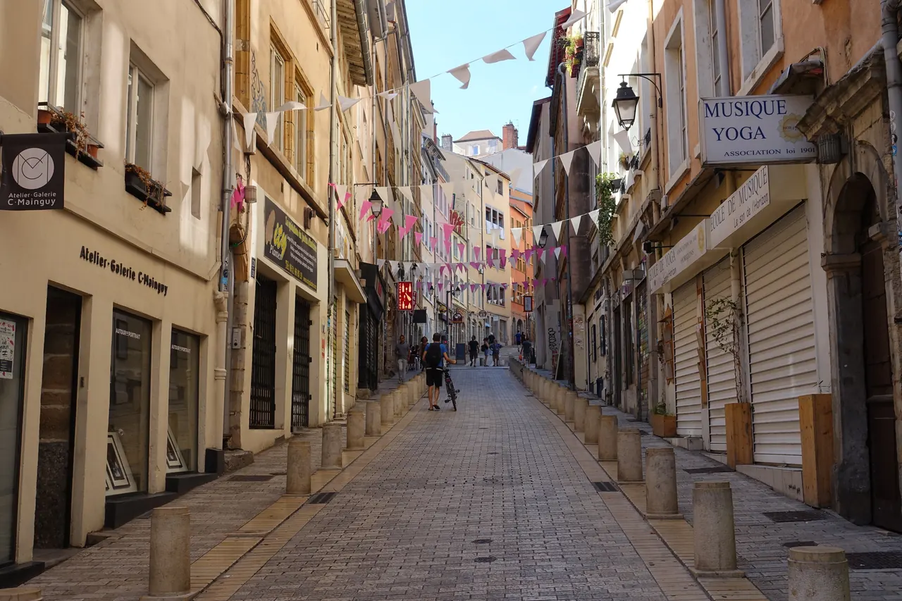

.jpg){kind=link}
관광·미술관
Nous avons déjà des billets.
이미 표가 있습니다.
누 자봉 데자 데 비예

푸르비에르가 성당과 성직자들의 '기도하는 언덕'이라면, 크루아루스는 19세기 유럽 비단 직조 산업을 호령했던 장인 직조공 카뉘(Canuts)들의 땀과 투쟁이 서린 '일하는 언덕(La colline qui travaille)'이자 유네스코 세계유산이다.
1805년 조제프 마리 자카르(Joseph Marie Jacquard)가 천공 카드로 복잡한 문양을 짜는 반자동 직조기를 발명하면서, 4m에 달하는 거대한 기계를 방 안에 설치하기 위해 천장 높이가 4m에 이르고 채광용 대형 창문이 뚫린 독특한 카뉘 아파트 단지가 언덕 전체에 건설되었다.
1831년과 1834년 열악한 노동 조건과 임금 삭감에 맞서 일어난 '카뉘의 반란(Révolte des Canuts)'은 유럽 산업혁명기 최초의 조직적 노동자 봉기로 역사에 기록되었으며, 오늘날에는 감각적인 보헤미안 부티크, 예술가 공방, 활기찬 로컬 시장이 어우러진 리옹 최고의 매력적인 주거 지구로 변모했다.
"비외리옹의 르네상스 귀족 골목과 전혀 다른, 19세기 산업 장인들의 거대한 노동 건축과 가파른 비탈길 트라불을 걸으며 리옹의 진정한 민중사를 체감하는 곳이다." 메트로를 타고 정상(Croix-Rousse역)으로 올라가 대로변 시장을 구경한 뒤, 6층 계단탑 쿠르 데 보라스(Cour des Voraces)를 관통하고 몽테 드 라 그랑드 코트(Montée de la Grande Côte) 계단길을 따라 프레스킬로 내려오는 2시간 도보 코스가 완벽하다.
| 운영시간 | Maison des Canuts 화~금 10:00~13:00, 14:00~18:00 / 토 10:00~18:00. 가이드 투어 화~토 11:00·15:30. 트라불 매일 7:00~19:00 |
|---|---|
| 휴무 | 동네·트라불(Cour des Voraces 등) 연중무휴 — 트라불 매일 07:00~19:00 |
| 예약 | 동네 산책 자체는 예약 불필요. Maison des Canuts 가이드 투어만 예약 필수(온라인 maisondescanuts.mapado.com) |
| 메모 | Maison des Canuts 는 일·월 휴관이다. 트라불 자체는 매일 연다. |
| 항목 | 상세 정보 |
|---|---|
| 위치 | Boulevard de la Croix-Rousse, 69004 Lyon |
| 입장료 | 야외 거리, 트라불, 쿠르 데 보라스 전수 무료 / Maison des Canuts 직조 시연 가이드 투어 약 €10 |
| 크루아루스 시장 | 화요일–일요일 06:00–13:30 (월요일 휴무): 크루아루스 대로 1km에 걸쳐 열리는 리옹 현지인들의 최고 인기 전통 시장 |
| Maison des Canuts | 화요일–토요일 10:00–18:30 (월요일 휴무): 10-12 Rue d'Ivry, 11:00 직조 시연 데모 |
| 교통 접근 (추천) | 메트로 C호선 Croix-Rousse역 또는 Hénon역 (톱니바퀴 메트로를 타고 정상 도착 후 도보 하산 권장) |
| 하산 루트 | Croix-Rousse역 → 대로 시장 → Maison des Canuts → Place Colbert(Cour des Voraces) → Montée de la Grande Côte → Place des Terreaux(프레스킬) |
Nous avons déjà des billets.
이미 표가 있습니다.
누 자봉 데자 데 비예
On peut prendre des photos ?
사진 찍어도 되나요?
옹 푀 프랑드르 데 포토
Où commence la visite ?
관람은 어디서 시작하나요?
우 코망스 라 비지트

알프스 만년설이 흘러드는 유럽에서 가장 투명한 안시 호수와 티우(Thiou) 운하를 품은 '알프스의 베네치아'. 12세기 수상 요새 팔레 드 릴(Palais de l'Île), 중세 안시 성채, 사랑의 다리(Pont des Amours).

유럽 최대 규모의 순수 보행자 붉은 자갈 광장(6.2ha)이자 리옹 지리망의 원점(Point Zéro). 중앙의 루이 14세 기마상과 푸르비에르 언덕 조망, 남서쪽 생텍쥐페리와 어린 왕자 기념 동상.

기원전 43년 로마 갈리아 수도 '루그두눔'이 시작된 발원지이자 리옹의 상징 '기도하는 언덕'. 기원전 15년 로마 대극장·오데옹과 19세기 비잔틴 모자이크 바실리카, 손강·프레스킬·알프스를 잇는 3단 대파노라마.

프랑스 요리의 교황 폴 보퀴즈의 이름을 딴 세계 최고의 실내 미식 시장. 프랑스 최고 장인(MOF)들의 50여 개 최고급 식료품점, 메르 리샤르 생마르슬랭 치즈, 시빌리아 샤퀴테리, 현장 굴·해산물 바.

1857년 조성된 117ha 면적의 프랑스 최대 도심 생태 공원. 16ha 인공 호수, 19세기 거대한 철골 유리 온실 식물원, 무료 야외 동물원과 국제 장미원(Roseraie).

15~16세기 번영했던 유럽 최대 규모의 르네상스 건축 지구이자 유네스코 세계유산. 건물과 안뜰을 관통해 미로처럼 이어진 리옹 고유의 비밀 통로 '트라불(Traboules)'과 생장 대성당.